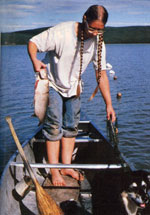

Julie Collins hauls in a whitefish from her gill net on Lake Minchumina, Alaska. The nets are dropped from a canoe daily during the summer. When winter arrives, the lake is covered with a three-foot layer of ice. But once fishing holes have been cut, the nets can be left in the water for up to a week without any spoilage of the catch